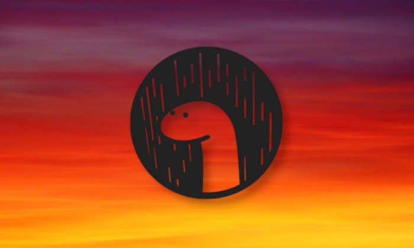
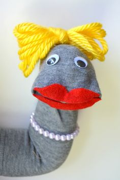

Deninho, o mais GOD!
A meia que mais cresceu na vida.

Em junho de 2020, a comunidade FullDeno developer foi lançada com os Mestre de “hello word” em Deno.
O Deninho eh o melhor, e aqui estao as provas:
- Vou acabar com o java - Deninho ,
- Node é inutil, mais inutil que o php - Deninho.
- Deninho nasceu com o intuito de se vingar e matar o seu inimigo, o Node. Mas graças aos fulldenolovers, Deninho saiu dessa vida e virou empreendedor e criou um bar e uma loja de tatuagem.
- Os javairos acharam um país cheio de deninho, em 1500 ai os javeiros escravizaram os deninhos até que em 1690 os deninhos recuperaram a força e fundaram o Denosil. Choraste?
- Deninho uma música ? "Diga onde vc vai, que eu vou fulldeno"
- Ovo mata o noudi. Fulldeno pistola
- Dedinho ficou tão popular que ganhou seu proprio programa de TV. Deno Sport Toda Terça e Quinta - 12:30 em twitch.tv/pokemaobr
O que temos a dizer ao Deninho (ou sobre o ele)?
- Deninho seu lindo eu te amu <3. Fezes o pensador
- Deninho seu lindo mate o node. Fezes o pensador
- Deninho matando coffeescript pela manhã - rui
